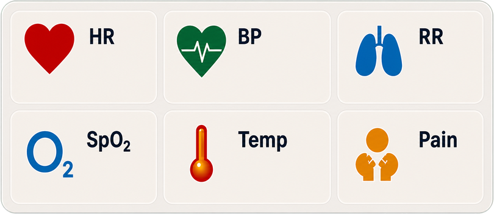

The artwork's icons are AI-drawn flat art matching standard
medical glyph conventions; these are hand-authored inline SVGs (no fonts,
no image files) with colors sampled from the artwork. Icons defined once
below and stamped everywhere via <use>.

Replica of the game's .chart-vitals tiles (same palette, borders, font sizes) at approximate desktop and phone widths. Values show the authored color coding (normal / yellow / red). Three layout variants — tap-test on the iPhone before choosing.